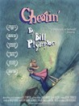
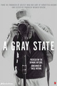
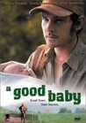

Movie Releases By Score

|
2201.
Twelve Monkeys
Release Date:
January 5, 1996

Between sanity and madness, fantasy and reality, the past and the future, comes an adventure beyond imagination from Terry Gilliam, the acclaimed director of "The Fisher King." Penal colony prisoner James Cole (Willis) must travel back in time from the year 2035 to find the cause of a virus that killed five billion people in 1997. (Universal)
|
2202.
Flushed Away
Release Date:
November 3, 2006

From the teams behind "Wallace & Gromit: The Curse of the Were-Rabbit," comes this madcap computer animated comedy set on and beneath the streets of London in the bustling sewer world of Ratropolis. (DreamWorks)
|
|
2203.
Awakenings
Release Date:
December 20, 1990

By opening one man's eyes to the world... he opened his own. A true story of a maverick doctor and the patients whose lives he changes. Dr. Malcolm Sayer, a shy research physician who uses an experimental drug to "awaken" the catatonic victims of a rare disease beginning with Leonard, the first patient to receive the controversial treatment. His awakening, filled with awe and enthusiasm, proves a rebirth for Sayer too, as the exuberant patient reveals life's simple but unutterably sweet pleasures to the introverted doctor. Encouraged by Leonard's stunning recovery, Sayer administers the drug to the other patients. The story of their friendship during this emotional journey is a testament to both the tenderness of the human heart and the strength of the human soul. (Sony Pictures)
|
|
2204.
The Measure of a Man
Release Date:
April 15, 2016
At the age of 51 and after 20 months on unemployment, Thierry (Vincent Lindon) starts a new job that soon brings him face to face with a moral dilemma. How much is he willing to accept to keep his job?
|
|

|
2205.
Like Crazy
Release Date:
May 5, 2017
Beatrice is a motor-mouthed fantasist, a self-styled billionaire countess who likes to believe she’s on intimate terms with world leaders. Donatella is a tattooed introvert, a fragile young woman locked in her own mystery. They are both patients at the Villa Biondi, a progressive but secure psychiatric clinic. Paolo Virzì’s new film tells the story of the unpredictable and moving friendship that develops between the two women as they flee the mental institution in search of love and happiness in the open-air nuthouse – the world of sane people. [Strand Releasing]
|

|
2206.
McCullin
Release Date:
October 30, 2015
To many, Don McCullin is the greatest living war photographer, often cited as an inspiration for today's photojournalists. For the first time, McCullin speaks candidly about his three-decade career covering wars and humanitarian disasters on virtually every continent and the photographs that often defined historic moments. From 1969 to 1984, he was the Sunday Times of London's star photographer, where he covered stories from the civil war in Cyprus to the war in Vietnam, from the man-made famine in Biafra to the plight of the homeless in the London of the swinging sixties. Exploring not only McCullin's life and work, but how the ethos of journalism has changed throughout his career, the film is a commentary on the history of photojournalism told through the lens of one of its most acclaimed photographers.
|

|
2207.
Thirteen Conversations About One Thing
Release Date:
May 24, 2002
Five contemporary stories weaved together into a single tale that examines the dramatic impact people have on one another. (Sony Pictures Classics)
|
2208.
The Cakemaker
Release Date:
June 29, 2018
Thomas, a young and talented German baker, is having an affair with Oren, an Israeli married man who dies in a car crash. Thomas travels to Jerusalem seeking answers. Keeping his secret for himself, he starts working for Anat, his lover’s widow, who owns a small café. Although not fully kosher and despised by the religious, his delicious cakes turn the place into a city attraction. Finding himself involved in Anat’s life in a way far beyond his anticipation, Thomas will stretch his lie to a point of no return.
|
|

|
2209.
The Hunchback of Notre Dame
Release Date:
June 21, 1996

A deformed bell-ringer must assert his independence from a vicious government minister in order to help his friend, a gypsy dancer.
|
2210.
Barcelona
Release Date:
July 29, 1994
Ted, a stuffy white guy from Illinois working in sales for the Barcelona office of a US corporation, is paid an unexpected visit by his somewhat less stuffy cousin Fred, who is an officer in the US Navy. Over the next few months, both their lives are irrevocably altered by the events which follow Fred's arrival, events which are the trivial stuff of a comedy of manners at first but which gradually grow increasingly dramatic.
|
|

|
2211.
Peggy Sue Got Married
Release Date:
October 10, 1986
Peggy Sue (Kathleen Turner) faints at a high school reunion. When she wakes up, she finds herself in her own past, just before she finished school.
|

|
2212.
Duck Season
Release Date:
March 10, 2006
An unlikely foursome stumble upon little revelations and insights into the kind of youthful longing that stays with one well past adolescence. (Warner Independent Pictures)
|

|
2213.
Inception
Release Date:
July 16, 2010
Dom Cobb is a skilled thief, the absolute best in the dangerous art of extraction, stealing valuable secrets from deep within the subconscious during the dream state, when the mind is at its most vulnerable. Cobb's rare ability has made him a coveted player in this treacherous new world of corporate espionage, but it has also made him an international fugitive and cost him everything he has ever loved. Now Cobb is being offered a chance at redemption. One last job could give him his life back but only if he can accomplish the impossible—inception. Instead of the perfect heist, Cobb and his team of specialists have to pull off the reverse: their task is not to steal an idea but to plant one. If they succeed, it could be the perfect crime. But no amount of careful planning or expertise can prepare the team for the dangerous enemy that seems to predict their every move. An enemy that only Cobb could have seen coming. This summer, your mind is the scene of the crime. [Warner Bros. Pictures]
|
2214.
Serenity
Release Date:
September 30, 2005
This story of a small band of galactic outcasts 500 years in the future centers around Captain Malcolm Reynolds, a hardened veteran (on the losing side) of a galactic civil war, who now ekes out a living pulling off small crimes and transport-for-hire aboard his ship, Serenity. (Universal)
|
|
2215.
The Life of Jesus
Release Date:
TBA
A social movie about current life in the north of France. Freddy and his friends are all unemployed. They pass away time by wandering around on their motorcycles and by directing their aggressive feelings towards Arab immigrants. Freddy is in love with Marie, a cashier at a local supermarket. When she is proposed to by Kader, a young Arab man, Freddy and his friends have an idea: they decide to punish Kader for what they call "such a provocation." After they have raped another girl, Marie finally commits to Kader, which seals his fate.
|
|
2216.
Computer Chess
Release Date:
July 17, 2013
A 1980s-set story centered around a weekend chess tournament that pits man against machine.
|
|
2217.
Paris 05:59: Théo & Hugo
Release Date:
January 27, 2017
In a sex club, Théo and Hugo’s bodies meet, click together and merge in a passionate embrace. After the headiness of desire and the ecstasy of their first encounter, the two young men, in the empty streets of Paris by night, are faced with their budding love. [Wolfe Releasing]
|
|
2218.
Tucker: The Man and His Dream
Release Date:
August 12, 1988
In the late 1940s, Preston Tucker had a dream to build the best cars ever made. Pressure from Detroit and government dooms his dream.
|
|

|
2219.
Casting JonBenét
Release Date:
April 28, 2017
In 1996, Boulder, Colorado was rocked by the mysterious death of six-year-old pageant queen, JonBenet Ramsey. Two decades later, director Kitty Green returns to audition local actors, unpacking how each remembers and relates to the ill-fated Ramsey family. [Netflix]
|
2220.
The Last King of Scotland
Release Date:
September 27, 2006
In an incredible twist of fate, a Scottish doctor (McAvoy) on a Ugandan medical mission becomes irreversibly entangled with one of the world's most barbaric figures: Idi Amin (Whitaker). Impressed by Dr. Garrigan's brazen attitude in a moment of crisis, the newly self-appointed Ugandan President Amin hand picks him as his personal physician and closest confidante. Though Garrigan is at first flattered and fascinated by his new position, he soon awakens to Amin's savagery - and his own complicity in it. Horror and betrayal ensue as Garrigan tries to right his wrongs and escape Uganda alive. (Fox Searchlight Pictures)
|
|

|
2221.
Watergate
Release Date:
October 12, 2018
Patient compendium drawing from 3400 hours of audio tapes, archival footage, declassified documents, et al, weaves a rich texture of understanding, particularly effective in flashbacks from their current day selves to their Watergate-era roles for such stalwarts as Carl Bernstein, Bob Woodward and John Dean. Numerous current day parallels are elegantly understated.
|

|
2222.
Unrelated
Release Date:
June 27, 2014
A woman in an unhappy relationship takes refuge with a friend's family on holiday in Tuscany.
|

|
2223.
Caucus
Release Date:
November 8, 2013
In intimate, often funny and sometimes emotional detail, Caucus tells the story of the 2011-2012 campaign in Iowa as eight Republicans fight to become their partyâ
|

|
2224.
After Innocence
Release Date:
October 21, 2005
This documentary tells the dramatic and compelling story of the exonerated -- innocent men wrongfully imprisoned for decades and then released after DNA evidence proved their innocence. The film focuses on the gripping story of seven men and their emotional journey back into society and efforts to rebuild their lives. (New Yorker Films)
|
2225.
The Trouble with Harry
Release Date:
October 3, 1955
The trouble with Harry is that he's dead, and everyone seems to have a different idea of what should be done with his body.
|
|

|
2226.
Tomboy
Release Date:
November 16, 2011
A family with two daughters, 10-year-old Laure and 6-year-old Jeanne, moves to a new suburban neighborhood during the summer holidays. With her Jean Seberg haircut and tomboy ways, Laure is immediately mistaken for a boy by the local kids, and decides to pass herself off as “Mikael,” a boy different enough to catch the attention of leader of the pack Lisa, who becomes smitten. At home with her parents and girlie younger sister, she is Laure: hanging out with her new pals and girlfriend, she is Mikael. Finding resourceful ways to hide her true self, Laure takes advantage of her new identity, as if the end of the summer would never reveal her unsettling secret. Céline Sciamma brings a light and charming touch to this contemporary coming-of-age story, which is also about relationships between children, children and parents, and the even more complicated one between one’s heart and body. (Rocket Releasing)
|

|
2227.
Farewell
Release Date:
July 23, 2010
In 1981, Colonel Grigoriev of the KGB (real name - Vladimir Vetrov), disenchanted with what the Communist ideal has become under Brezhnev, decides he is going to change the world. Discreetly, he makes contact with a French engineer working for Thomson in Moscow and little by little passes on documents to him - mainly concerning the United States - containing information which would constitute the most important Cold War espionage operation known to date. (NeoClassics Film)
|
2228.
The Orphanage
Release Date:
December 28, 2007
Laura returns to the stately manor house that holds such a special place in her heart. The orphanage was abandoned years ago; Laura and her husband, Carlos, plan to reopen it as a center for sick and disabled children. It will be a place where boys and girls--including the couple's beloved 7-year-old Simón--can play freely in the open air, enjoying the sunshine and the nearby beach. In its years of solitude, however, the orphanage has acquired a haunted, unhappy air. To get used to his creepy surroundings, Simón starts to have relationships with imaginary friends. Simón's circle of unseen friends quickly expands to include five more boys and girls, who tell cryptic stories and engage him in elaborate games that carry a suggestion of the sinister. Troubled, Laura allows herself to get sucked into her son's eerie world, which seems to resonate with a far-away and disturbing echo of her own childhood experiences. (Picturehouse)
|
|

|
2229.
The Bleeding Edge
Release Date:
July 27, 2018
America has the most technologically advanced health care system in the world, yet medical interventions have become the third leading cause of death, and the overwhelming majority of high-risk implanted devices never require a single clinical trial.
|

|
2230.
A Woman's Life
Release Date:
May 5, 2017
Adapted from the novel Une vie by Guy de Maupassant, A Woman’s Life is a tale of tormented love embedded in the restrictive social and moral codes of marriage and family in 19th century Normandy. Upon finishing her schooling in a convent, young aristocrat Jeanne (Judith Chemla) marries local Viscount Julien de Lamare (Swann Arlaud), who soon reveals himself to be a miserly and unfaithful husband. As she navigates his chronic infidelity, pressure from her family and community, and the alternating joys and burdens of motherhood, Jeanne’s rosy illusions about her privileged world are slowly stripped away.
|

|
2231.
The Invitation
Release Date:
April 8, 2016
The tension is palpable when Will (Logan Marshall-Green) shows up to a dinner party hosted by his ex-wife Eden (Tammy Blanchard) and new husband David (Michiel Huisman). The estranged divorcees’ tragic past haunts an equally eerie present; amid Eden’s suspicious behavior and her mysterious house guests, Will becomes convinced that his invitation was extended with a hidden agenda.
|
|  |
2232.
Cheatin'
Release Date:
August 15, 2014
In a fateful bumper car collision, Jake and Ella meet and become the most loving couple in the long history of romance. But when a scheming "other" woman drives a wedge of jealousy into their perfect courtship, insecurity and hatred spell out an untimely fate. With only the help of a disgraced magician and his forbidden "soul machine", Ella takes the form of Jake's numerous lovers, desperately fighting through the malfunction and deceit as they try to reclaim their destiny.
|

|
2233.
Welcome to Pine Hill
Release Date:
March 1, 2013
Blurring the line between documentary and fiction, Welcome to Pine Hill follows Shannon, a reformed drug dealer who is now an insurance claims adjuster, in the days following a grim medical diagnosis. Shannon sets out to make peace with those around him and in turn find his own peace beyond the cacophony of New York City. [Oscilloscope]
|
2234.
Roxanne Roxanne
Release Date:
March 23, 2018
In the early 1980s, the most feared battle MC in Queens, New York, was a fierce teenage girl with the weight of the world on her shoulders. At the age of 14, Lolita "Roxanne Shanté" Gooden was well on her way to becoming a hip-hop legend as she hustled to provide for her family while defending herself from the dangers of the streets of the Queensbridge Projects in NYC.
|
|
2235.
End of the Century
Release Date:
August 20, 2004
This documentary look at the Ramones traces the history of the band, from its unlikely origins, through its star-crossed career, bitter demise and the sad fates of Joey and Dee Dee. End of the Century is a vibrant, candid document of one of the most influential groups in the history of rock. (Magnolia Pictures)
|
|

|
2236.
Red Lights
Release Date:
August 20, 2004
Set during a summer holiday weekend in France, this is an edge-of-your-seat thriller in the tradition of Claude Chabrol and Alfred Hitchcock. (Wellspring)
|
|
|
2237.
Raja
Release Date:
March 26, 2004
Shot entirely in Morocco and Marrakech, Raja is the story of a beautiful young Moroccan woman living on the streets.
|

|
2238.
Ocean's Eleven
Release Date:
December 7, 2001
In this remake of the 1960 Rat Pack heist movie, Clooney plays Danny Ocean, a man of action attempting to orchestrate the most sophisticated, elaborate casino heist in history.
|
2239.
Scottsboro: An American Tragedy
Release Date:
January 19, 2001
Covering several decades, this documentary examines the Scottsboro case, an often-overlooked chapter in our nation’s history. The case centered on nine black men, ages thirteen to nineteen, who were accused of raping two young white women while riding the rails in Alabama in 1931.
|
|
2240.
Joe Gould's Secret
Release Date:
April 7, 2000
Filmmaker Stanley Tucci takes viewers into the poignant and sometimes humorous world of New York City in the 1940s. This is the true story of two men, one of whom would tell the other's story: famed "The New Yorker" writer Joseph Mitchell and New York bohemian Joe Gould. [USA Films]
|
|
2241.
In the Shadow of Women
Release Date:
January 15, 2016
Pierre and Manon (Stanislas Merhar and Clotilde Courau), a married couple working in fragile harmony on Pierre’s documentary film projects, the latest of which is a portrait of a resistance fighter (Jean Pommier), cheat on each other in this close look at infidelity—not merely the fact of it, but the particular, divergent ways in which it’s experienced and understood by men and women. [Distrib Films]
|
|
2242.
Orlando
Release Date:
June 9, 1993
Orlando is the story of a journey through time, of someone who lives for four hundred years, first as a man, then as a woman. As a young nobleman, Orlando is granted favors and property by Queen Elizabeth I. After her death, he falls passionately in love with a visiting Russian princess on the glittering ice of the frozen river Thames. The princess leaves Orlando, however, and, after a disastrous brush with poetry, he takes up his "manly" destiny as an Ambassador in the deserts of central Asia. There, in the midst of war, unwilling to kill or be killed, he changes sex. As a woman, Orlando returns to the formal salons of 18th century London, where she faces a choice: marry and have heirs or lose everything. In this age of wildness and repression, she meets the man of her dreams, but chooses to forsake both love and her inheritance. Finally, Orlando emerges into a twentieth century filled with speed and noise as an ordinary individual, who, in losing
everything, has found herself. [Sony Pictures Classics]
|
|

|
2243.
Forty Shades of Blue
Release Date:
September 28, 2005
Forty Shades of Blue tells the story of Laura, a young Russian woman living in Memphis with a much older rock n' roll legend, and the personal awakening she experiences in the wake of her unfortunate affair with his estranged son. (First Look Pictures)
|

|
2244.
Donbass
Release Date:
TBA
In the Donbass, a region of Eastern Ukraine, a hybrid war takes place, involving an open armed conflict alongside killings and robberies on a mass scale perpetrated by separatist gangs. In the Donbass, war is called peace, propaganda is uttered as truth and hatred is declared to be love. A journey through the Donbass unfolds as a chain of curious adventures, where the grotesque and drama are as intertwined as life and death. This is not a tale of one region, one country or one political system. It is about a world, lost in post-truth and fake identities. It is about each and every one of us. [Cannes]
|
|
|
2245.
The Time That Remains
Release Date:
January 7, 2011
An intimate semi-biographical portrait of Palestinians living as a minority in their own homeland between 1948 and the present day, from the acclaimed director of Divine Intervention. (IFC Films)
|

|
2246.
Mean Creek
Release Date:
August 20, 2004
When a group of teenage boys and one bold young girl seek playful revenge on the kid who has tormented them, nothing turns out the way they expected. What begins as a trip down a river and a childish prank soon turns into an eye-opening encounter with the enemy -- a harrowing journey into wilderness and an event that will force them to grapple with the very meaning of friendship and responsibility. (Paramount Classics)
|

|
2247.
Bully
Release Date:
March 30, 2012
Bully follows five kids and families over the course of a school year. Stories include two families who have lost children to suicide and a mother awaiting the fate of her 14-year-old daughter who has been incarcerated after bringing a gun on her school bus. With an intimate glimpse into homes, classrooms, cafeterias and principals’ offices, the film offers insight into the often cruel world of the lives of bullied children. As teachers, administrators, kids and parents struggle to find answers, Bully examines the dire consequences of bullying through the testimony of strong and courageous youth. Through the power of their stories, the film aims to be a catalyst for change in the way we deal with bullying as parents, teachers, children and society as a whole. (The Weinstein Company)
|

|
2248.
The Magnificent Seven
Release Date:
October 23, 1960
Seven gunfighters defend an oppressed Mexican village against an army of marauding bandits.
|

|
2249.
Mongol: The Rise of Genghis Khan
Release Date:
June 6, 2008
Mongol illuminates the life and legend of Genghis Khan. Based on leading scholarly accounts and Mongol delves into the dramatic and harrowing early years of the ruler who was born as Temudgin in 1162. As it follows Temudgin from his perilous childhood to the battle that sealed his destiny, the film paints a multidimensional portrait of the future conqueror, revealing him not as the evil brute of hoary stereotype, but as an inspiring, fearless and visionary leader. Mongol shows us the making of an extraordinary man, and the foundation on which so much of his greatness rested: his relationship with his wife, Borte, his lifelong love and most trusted advisor. (Picturehouse)
|

|
2250.
Kundun
Release Date:
December 25, 1997
Martin Scorsese directs the incredible true story of one of the world's most fascinating leaders -- Tibet's Dali Lama and his daring struggle to rule a nation at one of the most challenging times in its history. (BV Entertainment)
|
2251.
Winnie the Pooh
Release Date:
July 15, 2011
Walt Disney Animation Studios returns to the Hundred Acre Wood with Winnie the Pooh, the first big-screen Pooh adventure from Disney animation in more than 35 years. With the charm, wit and whimsy of the original featurettes, this all-new movie reunites audiences with the philosophical "bear of very little brain" and friends Tigger, Rabbit, Piglet, Kanga, Roo—and last, but certainly not least, Eeyore, who has lost his tail. "Well a tail is either there or it isn't there," said Pooh. "And yours isn't... there." Owl sends the whole gang on a wild quest to save Christopher Robin from an imaginary culprit. It turns out to be a very busy day for a bear who simply set out to find some hunny. Inspired by five stories from A.A. Milne's books in Disney's classic, hand-drawn art style, Winnie the Pooh hits theaters July 15, 2011. (Walt Disney Pictures)
|
|

|
2252.
Munich
Release Date:
December 23, 2005
Steven Spielberg directs an international cast in Munich, a gripping suspense thriller set in the aftermath of the massacre of 11 Israeli athletes at the 1972 Munch Olympics. This dramatic exploration inspired by true events follows a secret Israeli squad assigned to track down and kill the 11 Palestinians suspected to have planned the Munich attack -- and the personal toll this mission of revenge takes on the team and the man who led it. (Universal Pictures)
|
2253.
Lovesong
Release Date:
February 17, 2017
Neglected by her husband, Sarah (Riley Keough) embarks on an impromptu road trip with her young daughter and her best friend, Mindy (Jena Malone). Along the way, the dynamic between the two friends intensifies before circumstances force them apart. Years later, Sarah attempts to rebuild their intimate connection in the days before Mindy’s wedding.
|
|

|
2254.
Ghost Town Anthology
Release Date:
TBA
In a small and isolated town, Simon Dubé dies in a car accident. The stunned townspeople are reluctant to discuss the circumstances of the tragedy. From that point on time seems to lose all meaning, and the days stretch on without end.
|

|
2255.
Take My Eyes
Release Date:
March 17, 2006
Take My Eyes tackles the difficult subject of domestic violence, but like "Days of Wine and Roses" and "Drugstore Cowboy," it broadens (and never dilutes) its cautionary tale with humor, lyricism, and a shattered love story. (New Yorker Films)
|
2256.
Colette
Release Date:
September 21, 2018
After marrying a successful Parisian writer known commonly as “Willy” (Dominic West), Sidonie-Gabrielle Colette (Keira Knightley) is transplanted from her childhood home in rural France to the intellectual and artistic splendor of Paris. Soon after, Willy convinces Colette to ghostwrite for him. She pens a semi-autobiographical novel about a witty and brazen country girl named Claudine, sparking a bestseller and a cultural sensation. After its success, Colette and Willy become the talk of Paris and their adventures inspire additional Claudine novels. Colette's fight over creative ownership and gender roles drives her to overcome societal constraints, revolutionizing literature, fashion and sexual expression.
|
|

|
2257.
The Workshop
Release Date:
March 23, 2018
La Ciotat, the South of France. Antoine attends a summer writing workshop in which a few young people have been selected to write a crime thriller with the help of Olivia, a famous novelist. The creative process will recall the town’s industrial past, a form of nostalgia to which Antoine feels indifferent. More concerned with the fears of the modern world, the young man soon clashes with the group and Olivia, who seems at the same time alarmed and captivated by Antoine’s violence. [Strand Releasing]
|
2258.
Little Sister
Release Date:
October 14, 2016
October, 2008. Young nun Colleen (Addison Timlin) is avoiding all contact from her family, until an email from her mother announces, “Your brother is home.” On returning to her childhood home in Asheville, NC, she finds her old room exactly how she left it: painted black and covered in goth/metal posters. Her parents (Ally Sheedy and Peter Hedges) are happy enough to see her, but unease and awkwardness abounds. Her brother (Keith Poulson) is living as a recluse in the guesthouse since returning home from the Iraq war. During Colleen’s visit, tensions rise and fall with a little help from Halloween, pot cupcakes, and GWAR. Little Sister is a sad comedy about family – a schmaltz-free, pathos-drenched, feel good movie for the little goth girl inside us all.
|
|
2259.
Disobedience
Release Date:
April 27, 2018
From Sebastián Lelio, the director of the Academy Award-winning A Fantastic Woman, Disobedience follows a woman as she returns to the community that shunned her decades earlier for an attraction to a childhood friend. Once back, their passions reignite as they explore the boundaries of faith and sexuality. Written by Lelio and Rebecca Lenkiewicz and based on Naomi Alderman’s book, the film stars Rachel Weisz, Rachel McAdams and Alessandro Nivola.
|
|

|
2260.
Millions
Release Date:
March 11, 2005
A heartwarming story of two little boys, faith, miracles...and lots of money. (Fox Searchlight Pictures)
|

|
2261.
Pin Cushion
Release Date:
July 20, 2018
Super close mother Lyn and daughter Iona are excited for their new life in a new town. Determined to make a success of things after a tricky start, Iona becomes "best friends" with Keely, Stacey and Chelsea. Used to being Iona's bestie herself, Lyn feels left out. So Lyn also makes friends with Belinda, her neighbor. As much as Lyn and Iona pretend to each other that things are going great, things aren't going great for either of them. Iona struggles with the girls, who act more like frenemies than friends, and Belinda won't give Lyn her stepladders back. Both mother and daughter retreat into fantasy and lies.
|

|
2262.
My Big Night
Release Date:
April 15, 2016
During the never-ending TV taping for a New Year's Eve program, peoples personal lives clash and eventually explode out into the open.
|

|
2263.
The Legend of Drunken Master
Release Date:
October 20, 2000
When Chan mixes up his luggage during a train trip, he finds himself at odds with evil foreigners trying to steal sacred imperial treasures. Never before have such elaborate, acrobatic fight sequences been captured on film. (Dimension Films)
|
2264.
East Is East
Release Date:
April 14, 2000
Set in England during the 1970's, a traditional Pakistani man (Om Puri) finds his family's actions are definitely taking on non-traditional qualities.
|
|

|
2265.
Judy Berlin
Release Date:
February 25, 2000
When the small suburban town of Babylon, Long Island, in engulfed in the darkness of a strange solar eclipse, two former classmates (Harnick and Falco) pass the day reminiscing. (Shooting Gallery)
|

|
2266.
Edward Scissorhands
Release Date:
December 7, 1990
In this modern fairy tale, Edward is a gentle, naive creation with razor sharp scissors for hands. When he is taken home by a kindly Avon lady live with her family, his adventure in the pastel paradise of Suburbia begins! (20th Century Fox)
|

|
2267.
Dangerous Liaisons
Release Date:
December 16, 1988
A cruel wager is made between the beautiful but deviousMarquise de Merteuil (Close) and her former lover, the Vicomte de Valmont (Malkovich). The Marquise challenges Valmont to seduce the virginal Cecile de Volanges (Thurman) before the girl can be wed. As a counter-challenge Valmont bets the Marquise that he will be able to bed the married Madame de Tourvel (Pfeiffer).
|
2268.
Commune
Release Date:
November 3, 2006
With its spotlight on the still surviving Black Bear Ranch commune in remote Northern California, this documentary is the first real insider look at communal living, and how seemingly small personal choices can create shock waves felt throughout the world. (Five Points Media)
|
|
2269.
Eat That Question: Frank Zappa in His Own Words
Release Date:
June 24, 2016
Eat That Question: Frank Zappa in His Own Words is an intimate encounter with the iconoclastic composer and musician. Rare archival footage reveals a provocative 20th century musical genius whose worldview reverberates into the present day and beyond.
|
|
2270.
In the Line of Fire
Release Date:
July 9, 1993
Eastwood stars as Frank Horrigan, a veteran Secret Service agent haunted by his failure to protect John F. Kennedy from assassination. Thirty years later, he gets a chance to redeem himself when a brilliant psychopath threatens to kill the current president and take Horrigan with him. (Sony Pictures)
|
|
2271.
Love, Gilda
Release Date:
September 21, 2018
In her own words, comedienne Gilda Radner looks back and reflects on her life and career. Weaving together recently discovered audiotapes, interviews with her friends, rare home movies and diaries read by modern day comediennes, Love, Gilda offers a unique window into the honest and whimsical world of a beloved performer whose greatest role was sharing her story.
|
|
2272.
Hidden Figures
Release Date:
December 25, 2016
As the United States raced against Russia to put a man in space, NASA found untapped talent in a group of African-American female mathematicians that served as the brains behind one of the greatest operations in U.S. history. Based on the unbelievably true life stories of three of these women, known as "human computers", we follow these women as they quickly rose the ranks of NASA alongside many of history's greatest minds specifically tasked with calculating the momentous launch of astronaut John Glenn into orbit, and guaranteeing his safe return. Dorothy Vaughn, Mary Jackson, and Katherine Johnson crossed all gender, race, and professional lines while their brilliance and desire to dream big, beyond anything ever accomplished before by the human race, firmly cemented them in U.S. history as true American heroes. [20th Century Fox]
|
|
2273.
Oldboy
Release Date:
March 25, 2005
Oh Dae-su (Choi Min-sik) is an ordinary Seoul businessman with a wife and little daughter who, after a drunken night on the town, is locked up in a strange, private "prison." No one will tell him why he's there or who his jailer is. The imprisonment last for 15 years until one day when Dae-su finds himself unexpectedly deposited on a grass-covered high-rise roof, determined to discover the mysterious enemy who had him locked up. (Tartan Films)
|
|

|
2274.
Clear and Present Danger
Release Date:
August 3, 1994
When his mentor Admiral James Greer (Jones) becomes gravely ill, Jack Ryan (Ford) is appointed acting CIA Deputy Director of Intelligence. His first assignment: investigate the murder of one of the President's friends, a prominent U.S. businessman with secret ties to Colombian drug cartels. Unbeknownst to Ryan, the CIA has already dispatched a deadly field operative (Dafoe) to lead a paramilitary force against the Colombian drug lords. Caught in the crossfire, Ryan takes matters into his own hands, risking his career and life for the only cause he still believes in-the truth. (Paramount)
|
2275.
Robin Williams: Come Inside My Mind
Release Date:
July 13, 2018
A funny, intimate and heartbreaking portrait of one of the world’s most beloved and inventive comedians, Robin Williams: Come Inside My Mind is told largely through Williams’ own words, and celebrates what he brought to comedy and to the culture at large, from the wild days of late-1970s L.A. to his death in 2014. [HBO]
|
|
2276.
Sand Storm
Release Date:
September 28, 2016
As wedding festivities get underway in a Bedouin village in Southern Israel, Jalila finds herself in the awkward position of hosting her husband Suliman’s marriage to a second, much younger wife. During the celebration, Jalila stumbles across her eldest daughter Layla’s involvement with a boy from her university—a strictly forbidden liaison that would shame the family. Burying the indignity of Suliman and his new bride living next door, Jalila also tries to contain Layla’s situation by clamping down on her. But Layla sees a different life for herself. [Kino Lorber]
|
|
|  |
2277.
A Gray State
Release Date:
November 3, 2017
In 2010 David Crowley, an Iraq veteran, aspiring filmmaker and charismatic up-and-coming voice in fringe politics, began production on his film A Gray State. Set in a dystopian near-future where civil liberties are trampled by an unrestrained federal government, the film's crowd funded trailer was enthusiastically received by the burgeoning online community of libertarians, Tea Party activists and members of the nascent alt-right. In January of 2015, Crowley was found dead with his family in their suburban Minnesota home. Their shocking deaths quickly become a cause célèbre for conspiracy theorists who speculate that Crowley was assassinated by a shadowy government concerned about a film and filmmaker that was getting too close to the truth about their aims. A Gray State combs through Crowley's archive of 13,000 photographs, hundreds of hours of home video, and exhaustive behind-the-scenes footage of Crowley's work in progress to reveal what happens when a paranoid view of the government turns inward — blurring the lines of what is real and what people want to believe. [First Run Features]
|

|
2278.
Heart Like a Wheel
Release Date:
April 1, 1983
Shirley Muldowney is determined to be a top-fuel drag racer, although no woman has ever raced them before. Despite the high risks of this kind of racing and the burden it places on her family life, she perseveres in her dream.
|

|
2279.
A Woman in Berlin
Release Date:
July 17, 2009
Set in 1945 during the Red Army invasion of Berlin. Women are victims of rape and devastation; one of them is Anonyma , who had been a journalist and photographer. In her desperation, she decides to look for an officer who can protect her. She meets a Russian officer Andrej - an encounter which develops into a complex symbiotic relationship that forces them to remain enemies until the bitter end. (Strand Releasing)
|

|
2280.
Higher Ground
Release Date:
August 26, 2011
Higher Ground, depicts the landscape of a tight-knit spiritual community thrown off-kilter when one of their own begins to question her faith. Inspired by Carolyn S. Briggs' memoir, This Dark World, the film tells the story of a thoughtful woman's struggles with belief, love, and trust. Faith, love and honesty are the cornerstones of this story of a woman who learns that no matter how many times she loses her footing, she has within herself all that's necessary to get to a higher place. (Sony Picture Classics)
|

|
2281.
Golden Door
Release Date:
May 25, 2007
Golden Door is a classic tale of coming to America. It is a romantic fable that takes audiences into the very heart of this quintessential American experience -- as on man, driven by fantastic dreams and confronted with shocking realities, makes an epic odyssey in search of a brand new world. (Miramax Films)
|

|
2282.
Frozen
Release Date:
November 27, 2013
Anna sets off on an epic journey—teaming up with rugged mountain man Kristoff and his loyal reindeer Sven—to find her sister Elsa, whose icy powers have trapped the kingdom of Arendelle in eternal winter. Encountering Everest-like conditions, mystical trolls and a hilarious snowman named Olaf, Anna and Kristoff battle the elements in a race to save the kingdom. [Walt Disney Pictures]
|

|
2283.
Stonewall Uprising
Release Date:
June 18, 2010
"It was the Rosa Parks moment," says one man. June 28, 1969: NYC police raid a Greenwich Village Mafia-run gay bar, The Stonewall Inn. For the first time, patrons refuse to be led into paddy wagons, setting off a 3-day riot that launches the Gay Rights Movement. Told by Stonewall patrons, reporters and the cop who led the raid, Stonewall Uprising recalls the bad old days when psychoanalysts equated homosexuality with mental illness and advised aversion therapy, and even lobotomies; public service announcements warned youngsters against predatory homosexuals; and police entrapment was rampant. At the height of this oppression, the cops raid Stonewall, triggering nights of pandemonium with tear gas, billy clubs and a small army of tactical police. The rest is history. (Karen Cooper, Director, Film Forum)
|

|
2284.
Bad Hair
Release Date:
November 19, 2014
Junior (Samuel Lange Zambrano) is nine years old and has “bad hair.” He wants to have it straightened for his yearbook picture, like a fashionable pop singer. This puts him at odds with his mother, Marta (Samantha Castillo). The more Junior tries to look beautiful and make his mother love him, the more she rejects him.
|

|
2285.
Plimpton! Starring George Plimpton as Himself
Release Date:
May 22, 2013
Plimpton! tells the story of writer, editor, amateur sportsman and friend to many, George Plimpton. Using Plimpton’s own narration – along with thoughts and stories from friends, family and contemporaries – the film is a joyful celebration of a life lived fully, richly, strangely, and, at times, a life that is hard to believe was actually lived by just one man.
|
2286.
The Town
Release Date:
September 17, 2010
There are over 300 bank robberies in Boston every year. And most of the professionals live in a one-square-mile neighborhood called Charlestown. One of them is Doug MacRay, but he is not cut from the same cloth as his fellow thieves. Unlike them, Doug had a chance at success, a chance to escape following in his father's criminal footsteps. Instead, he became the leader of a crew of ruthless bank robbers, who pride themselves on taking what they want and getting out clean. The only family Doug has are his partners in crime, especially Jem, who, despite his dangerous, hair-trigger temper, is the closest thing Doug ever had to a brother. However, everything changed on the gang's last job when Jem briefly took a hostage: bank manager Claire Keesey. When they discover Claire lives in Charlestown, Jem gets nervous and wants to check out what she might have seen. Knowing what Jem is capable of, Doug takes charge. He seeks out Claire, who has no idea that their encounter is not by chance or that this charming stranger is one of the men who terrorized her only days before. As his relationship with Claire deepens into a passionate romance, Doug wants out of this life and the town. But with the Feds closing in and Jem questioning his loyalty, Doug realizes that getting out will not be easy and, worse, may put Claire in the line of fire. Any choices he once had have boiled down to one: betray his friends or lose the woman he loves. The Town is a dramatic thriller about robbers and cops, friendship and betrayal, love and hope, and escaping a past that has no future.(Warner Bros. Pictures)
|
|
2287.
The Trials of Muhammad Ali
Release Date:
August 23, 2013
The Trials Of Muhammad Ali investigates its extraordinary and often complex subject's life outside the boxing ring. From joining the controversial Nation of Islam and changing his name from Cassius Clay to Muhammad Ali, to his refusal to serve in the Vietnam War in the name of protesting racial inequality, to his global humanitarian work, Muhammad Ali remains an inspiring and controversial figure. Outspoken and passionate in his beliefs, Ali found himself in the center of America's controversies over race, religion, and war. [Kino Lorber]
|
|

|
2288.
Ain't Them Bodies Saints
Release Date:
August 16, 2013
An outlaw who escapes from prison sets out to reunite with his wife and the daughter he has never met.
|

|
2289.
Miss Hokusai
Release Date:
October 14, 2016
As all of Edo flocks to see the work of the revered painter Hokusai, his daughter O-Ei toils diligently inside his studio. Her masterful portraits, dragons and erotic sketches – sold under the name of her father – are coveted by upper crust Lords and journeyman print makers alike. Shy and reserved in public, in the studio O-Ei is as brash and uninhibited as her father, smoking a pipe while sketching drawings that would make contemporary Japanese ladies blush. But despite this fiercely independent spirit, O-Ei struggles under the domineering influence of her father and is ridiculed for lacking the life experience that she is attempting to portray in her art. Miss Hokusai‘s bustling Edo (present day Tokyo) is filled with yokai spirits, dragons, and conniving tradesmen, while O-Ei’s relationships with her demanding father and blind younger sister provide a powerful emotional underpinning to this sumptuously-animated coming-of-age tale. [GKids]
|

|
2290.
In Darkness
Release Date:
February 10, 2012
In Darkness is based on a true story. Leopold Socha, a sewer worker and petty thief in Lvov, a Nazi occupied city in Poland, one day encounters a group of Jews trying to escape the liquidation of the ghetto. He hides them for money in the labyrinth of the town’s sewers beneath the bustling activity of the city above. What starts out as a straightforward and cynical business arrangement turns into something very unexpected, the unlikely alliance between Socha and the Jews as the enterprise seeps deeper into Socha’s conscience. The film is also an extraordinary story of survival as these men, women and children all try to outwit certain death during 14 months of ever increasing and intense danger. [Sony Pictures Classics]
|

|
2291.
Cyrus
Release Date:
June 18, 2010
With John's social life at a standstill and his ex-wife about to get remarried, a down on his luck divorcee finally meets the woman of his dreams, only to discover she has another man in her life – her son. (Fox Searchlight Pictures)
|

|
2292.
In the Realms of the Unreal
Release Date:
December 22, 2004
This explores the parallel lives of legendary outsider artist Henry Darger, a reclusive janitor by day and a visionary artist by night. (Diorama Films)
|
2293.
Lost in La Mancha
Release Date:
January 31, 2003
Lost In La Mancha may be the first 'un-making of' documentary; the story of a film that does not exist. Instead of a sanitized glimpse behind the scenes, this film offers a unique, in-depth look at the harsher realities of filmmaking. With drama that ranges from personal conflicts to epic storms, this is a record of a film disintegrating. (Quixote Films)
|
|

|
2294.
Little Otik
Release Date:
December 19, 2001
This film is based upon a classic fairy tale of an infertile couple who adopt a tree stump as their baby.
|
2295.
Liam
Release Date:
September 21, 2001
A poignant portrait of a family's free-fall into poverty seen through the eyes of an innocent child, personifying the dream of a brighter future. (Lions Gate Films)
|
|
|  |
2296.
A Good Baby
Release Date:
December 1, 2000
In rural North Carolina, an abandoned baby becomes a pawn in a complicated relationship involving a young man (Thomas) who finds her, a thick-skinned woman who takes a liking to him, and a traveling salesman (Strathairn) who claims the baby is his lost child.
|
2297.
Gods and Monsters
Release Date:
November 4, 1998
Hollywood history comes to life in this tale of the last days of Frankenstein director James Whale (McKellen). Long forgotten by the studios, Whale has retired to pursue painting and a life of leisure. Gods and Monsters explores his final fascination with a handsome gardener, Clayton Boone (Fraser). (Lions Gate Films)
|
|

|
2298.
Daughter of Mine
Release Date:
February 1, 2019
10-year-old Vittoria’s summer will be one of two mothers to challenge, to hate, to love and to forgive. Shy Vittoria has a close relationship with her loving good mother Tina. But their quiet Sardinian life will be upset when the young girl discovers that local party girl Angelica is her birth mother. When Angelica is forced to move away because of financial troubles, she asks to become acquainted with Vittoria. Tina agrees, comforted by the idea that the woman will soon be leaving town. Searching for something deep and inexplicable, Vittoria and Angelica spend more and more time together against Tina’s will.
|

|
2299.
Ballet 422
Release Date:
February 6, 2015
New York City Ballet, under the artistic direction of Ballet Master in Chief Peter Martins, boasts a roster of more than 90 elite dancers and a repertory of works by many of the greatest choreographers in the history of the art form. When 25-year-old NYCB dancer Justin Peck begins to emerge as a promising young choreographer, he is commissioned to create a new ballet for the Company’s 2013 Winter Season. With unprecedented access to an elite world, the film follows Peck as he collaborates with musicians, lighting designers, costume designers and his fellow dancers to create Paz de la Jolla, NYCB’s 422nd new ballet. [Magnolia Pictures]
|
2300.
Lost in Paris
Release Date:
June 16, 2017
When Fiona’s (Fiona Gordon) orderly life is disrupted by a letter of distress from her 88-year-old Aunt Martha (Emmanuelle Riva) who is living in Paris, Fiona hops on the first plane she can and arrives only to discover that Martha has disappeared. In an avalanche of spectacular disasters, she encounters Dom (Dominique Abe), the affable, but annoying tramp who just won’t leave her alone.
|
|